Introduction
Pour une raison qui m'échappe, les marins utilisent un langage incompréhensible au commun des mortels.
Même les marins d'eau douce, comme moi, se croient obligés d'utiliser des tas de mots aux consonances québécoises, voire acadiennes, pour faire croire qu'ils ont passé leur vie à sillonner les océans.
Comme on m'a fait remarquer que cette manie était certes charmante mais un peu fatigante pour ceux qui ne font pas de voile, voici un petit lexique.
Il s'agit d'une forme géométrique plane à quatre côtés de taille identique.
Sur un voilier de plaisance, c'est la partie couverte (à l'intérieur) où se trouve généralement la cambuse (là où on fait la cuisine) et la salle à manger.
C'est donc l'espace de vie principal quand il fait mauvais.

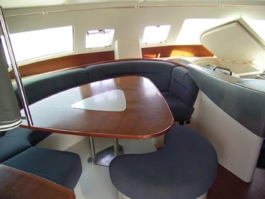
C'est la partie du bateau d'où on le pilote, donc c'est généralement là que l'on trouve la ou les barres à roue et/ou barre franche.
Pour les petits curieux, un bateau bien construit comprend un dispositif permettant de le guider, appelé gouvernail, constitué d'une partie immergée appelée safran, d'une partie émergée et d'une liaison souvent mécanique entre les deux.
La barre à roue (cette espèce de grand volant qui fut jadis en bois) est donc une partie du gouvernail, au même titre que la barre franche.
Dans un catamaran, le cockpit se trouve au même niveau que le carré, ce qui facilite grandement le passage de l'un à l'autre.
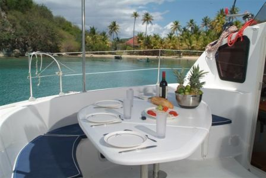
Le rouf: c'est la partie du bateau située au-dessus du carré, à l'extérieur.
Les étraves: ce sont les parties avant des flotteurs (coques) qui fendent l'eau.
Les jupes: ce sont les parties arrière des flotteurs (coques) à partir desquelles on plonge dans l'eau bleue et chaude.
Les haubans: ce sont les câbles, généralement métalliques, qui vont de la coque vers le mat et qui permettent de le maintenir vertical.
L'étai: c'est le câble, généralement métallique, qui va de la proue vers le sommet du mat.
Le pataras: c'est le câble, généralement métallique, qui va de la poupe vers le sommet du mat et que l'on peut parfois border pour courber le mat.
Les drisses: ce sont les cordages qui passent par le haut du mât. En général, on a donc la drisse de grand voile (qui permet de hisser la grand-voile) et la drisse de génois. On peut évidemment avoir d'autres drisses, dont celle de spi, par exemple.
Le tangon: c'est un tube métallique (ou en carbone) qui permet de maintenir le point d'écoute d'une voile loin du mat, essentiellement utilisé pour les spis 'asymétriques'. Mais on peut également tangonner un génois.
Le bout dehors: c'est un beaupré atrophié, à savoir un petit tube métallique placé horizontalement à la proue(avant) du bateau et qui sert à amurer(fixer) les gennakers et autres spis asymétriques.
Les bossoirs: ce sont les bras métalliques érigés à l'arrière du bateau et qui permettent de soulever l'annexe (le dinghy) hors de l'eau durant les traversées.
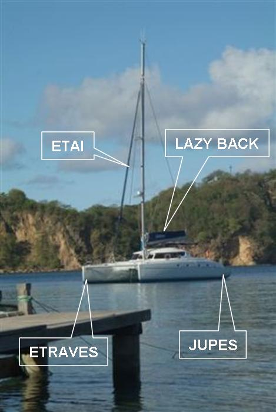
Sur les bateaux de plaisance, la grand-voile reste à poste en quasi-permanence (on la laisse attachée au mat sans la rincer et la plier entre chaque utilisation). Evidemment, lorsqu'on l'affale, elle a tendance à former un tas sur le rouf. Pour éviter cela, on la 'ferle' sur la bôme, à savoir on fait des plis qu'on passe alternativement d'un côté à l'autre de la bôme. Le lazy bag permet d'emballer la grand-voile, une fois celle-ci affalée, en la protégeant donc du soleil et d'autres intempéries.
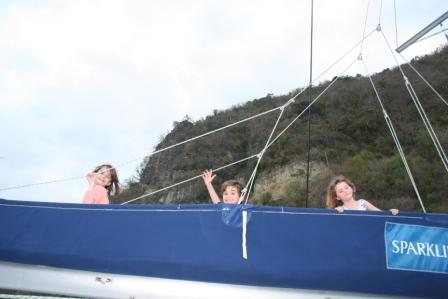
Le bimini, c'est ce 'toit' en toile ou en dur que l'on trouve sur les cockpit des bateaux et qui protège l'équipage des rayons du soleil (et dans une moindre mesure de la pluie, quand celle-ci n'est pas trop violente).
Sur la photo, on voit aussi les deux îlots de survie et les bossoirs qui soutiennent la structure portant les panneaux solaires et les futures éoliennes.
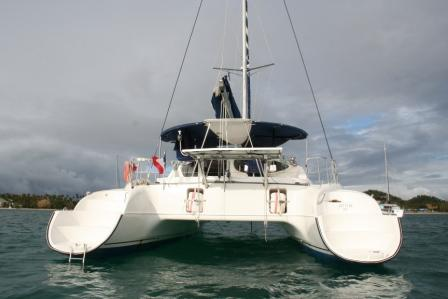
La légende veut que ces termes proviennent du mot BATTERIE qui figurait (?) à la poupe des anciens navires.
Du coup, quand on se met dans le sens du bateau, bâbord c'est à gauche et TRIbord à droite.
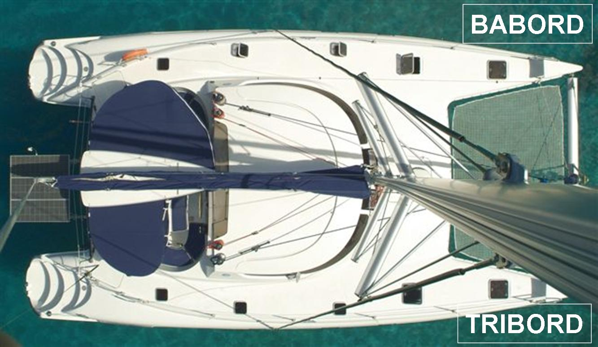
Sur les bateaux qui n'ont qu'un mat, la grand voile est la voile de derrière.
Elle est maintenue en place par 3 points de fixation: au-dessus (c'est d'ailleurs en tirant sur ce point qu'on hisse la voile, à moins d'avoir un enrouleur), en-bas devant (donc au pied du mat) et en-bas derrière.
Sur les bateaux qui n'ont qu'un mat, c'est la voile de devant, aussi appelée foc ou solent.
On notera que, sur les voiliers de plaisance actuels, cette voile est généralement accompagnée d'un mécanisme qui permet de l'enrouler et de la dérouler autour de l'étai.
En général, on parle de l'écoute de grand'voile.
Ceci dit, le génois en dispose également. Donc les écoutes, ce sont les cordes fixées à l'arrière des voiles et qui reviennent au poste de pilotage pour permettre au skipper de les orienter et/ou de les courber.
On notera au passage qu'en cas d'urgence, lorsque le vent devient soudainement trop violent, le meilleur moyen de ne pas faire chavirer le cata, c'est de relâcher (choquer) rapidement l'écoute de grand'voile, laquelle se met alors immédiatement dans le vent, en annulant le couple correspondant sur le bateau.
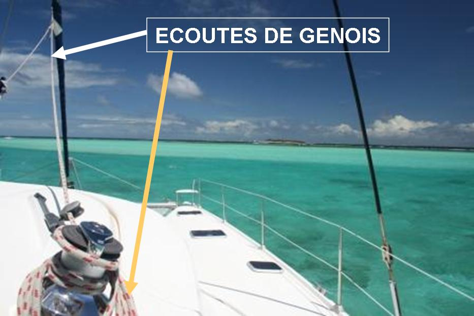
Sur la mer, on mesure les vitesses en noeuds. Un noeud = 1.852m/heure.
Puisqu'on y est, on mesure les distances en miles (prononcez mille et pas maïle), soit 1.852m ou en brasses (=1,85m).
Pour la petite histoire, on notera qu'une encablure correspond à 100 brasses, soit 185m.
Quand on a assez navigué, on s'arrête en général près du rivage. On relâche l'ancre qui choit sur le fond. On laisse alors filer pas mal de chaine et on espère que tout cela va nous permettre de tenir en place pendant la nuit, même en cas de coup de vent.
Cette opération nécessite de mouiller l'ancre, d'où le terme de mouillage.
C'est un dispositif qui empêche le cata d'osciller autour du point d'attache de la chaîne, lorsqu'on est au mouillage.
La patte d'oie est constituée d'un cordage de 10 à 20m, frappé aux étraves et fixé à la chaîne. La force de traction sur la chaîne se répartit également des deux côtés du bateau, lui assurant une stabilté dans le vent. Lorsque l'on jette l'ancre, on lache suffisamment de chaîne pour assurer une bonne tenue, puis on fixe le milieu du cordage de la patte d'oie à l'un des maillons de la chaîne. On lache ensuite quelques mètres de chaîne supplémentaires, jusqu'à ce que le tronçon de chaîne situé entre le point d'attache de l'ancre et le point d'attache de la patte d'oie soit hors tension.
Il va de soi que la rupture d'un des brins rompt partiellement l'équilibre et requiert la mise en place d'une nouvelle patte d'oie, ce qui nécessite, outre un cordage assez long et de bonne résistance, un peu de patience pour trouver le point d'équilibre (car la chaîne n'est pas exactement au milieu du bateau).
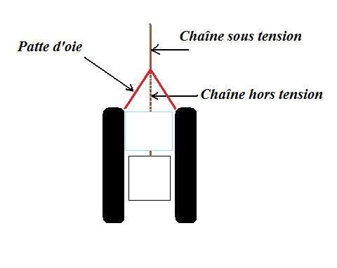
C'est le fait pour le bateau de s'incliner sur la droite ou sur la gauche (suite à l'action combinée du vent et de la mer).
C'est le fait pour le bateau de s'incliner sur l'avant ou sur l'arrière (suite à l'action combinée du vent et de la mer).
L'allure du bateau qualifie l'angle du vent par rapport à son sens de déplacement.
On distingue en gros les allures suivantes:
Debout: le bateau est face au vent (et à moins d'être au moteur, cette situation devrait être très temporaire car les voiles ne sont d'aucune utilité à cette allure).
Au près: le vent vient de devant (mais à plus de 40° vers bâbord ou tribord).
De travers: le vent soufle perpendiculairement.
Au largue: le vent vient de derrière par bâbord ou tribord.
Au portant: le vent pousse très exactement dans l'axe du bateau.
On distingue donc les allures 'portantes' ou le bateau est 'poussé' par le vent des allures 'en finesse' ou le vent 'tire' le bateau suite au passage de l'air dans les voiles (qui adoptent alors un profil d'aile d'avion).
Si, de nos jours, la navigation en finesse est devenue ordinaire (et permet de battre des records de vitesse), il ne faut pas oublier que les allures portantes furent les seules connues jusqu'au 18ème siècle (donc jusqu'à cette époque, les bateaux allaient littéralement 'là où le vent les menaient').
Déventer:Quand un obstacle se présente entre la voile et le vent, la voile se dévente: elle se dégonfle et commence à battre de manière désordonnée en faisant beaucoup de bruit. C'est ce qui arrive au génois dans les allures portantes: il est déventé par la grand'voile, au moins partiellement. De la même manière, les voiles sont supposées être par bâbord ou tribord, selon l'allure du bateau. Quand le bateau est exactement au portant, les voiles sont instables, elles hésitent entre bâbord et tribord au gré des vagues. Autant dire que les bateaux actuels ne font jamais de portant, sauf sous spi voile qui n'a pas de 'côté'.
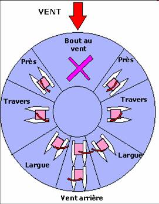
En fait, il s'agit de courbes polaires, qui donnent la vitesse optimale d'un bateau en fonction de l'angle par rapport au vent pour une vitesse de vent donnée. Il y a donc autant de polaires que de vitesses du vent.
Sur le graphe, la vitesse du bateau est représentée par la courbe rouge. On suppose que le bateau va vers le haut. A titre d'exemple, sur la polaire ci-contre, donnée pour un vent de 10 noeuds, la vitesse optimale du bateau pour un vent venant de 90° est d'environ 9 noeuds (la courbe rouge croise l'axe horizontal, représentant un vent à 90° du bateau, à +/- 9). La ligne rouge pointillée représente l'angle optimal, c'est-à-dire celui pour lequel la vitesse optimale du bateau est la plus grande (ce qui, je l'avoue, n'est pas clair sur le graphe...).
Ainsi, en général, l'allure grand largue (vent de 1/4 arrière) est la plus rapide. Lorsqu'on s'éloigne de cet angle, la vitesse diminue, que l'on lofe (remonte au vent) ou que l'on abatte (descende au vent).
On notera qu'il y a autant de groupes de polaires que de configurations du bateau. Il est clair que si vous avez un spi au lieu d'un génois, vous n'avez pas les mêmes vitesses optimales. Pour ceux qui se demandent pourquoi l'on parle de vitesse optimale, il convient de se rappeler que la vitesse du bateau ne dépend pas que du vent. L'état de la mer ou la charge du bateau influent également.
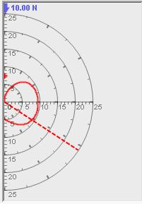
Il s'agit de bouées fixées au sol au fond de l'eau par une corde ou une chaine (attachée à un gros bloc de béton) et munies d'un anneau métallique dans lequel on passe une amarre. Ces bouées sont généralement disposées dans les baies fort fréquentées et/ou protégées, par faible profondeur.
S'amarrer au corps mort permet de ne pas jeter l'ancre et (normalement) de dormir sur ses deux oreilles en étant certain de ne pas chasser et de ne pas endommager les fonds marins.
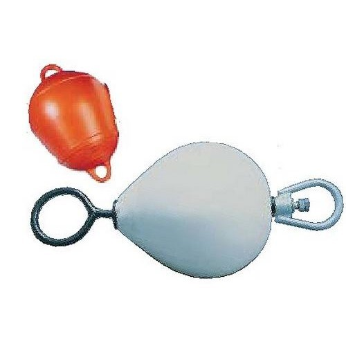
Il arrive malheureusement que l'ancre ne soit pas solidement fixée au fond, soit parce que le sol n'accroche pas trop bien, soit parce que l'on a pas mis assez de chaine.
Dans ces cas, votre bateau peut se 'décrocher' du sol et dériver en entrainant l'ancre avec lui. Cela nous est déjà arrivé quelques fois, à notre désagréable surprise.
En général, lors du mouillage, on vérifie autant que faire se peut la qualité de l'ancrage (la tenue). Mais il peut arriver que le vent forcisse, que la position du bateau par rapport à l'ancre change ou qu'un plongeur mal intentionné vous plastique.
La voile, c'est avant tout une affaire de vent. Comme on l'a vu pour les allures, on indique la direction à suivre par rapport au vent et, lorsque c'est faisable, on indique la position de certains objets de la même façon.
Donc, pas question de dire 'à droite' ou 'à gauche', ou encore 'devant' ou 'derrière'. Non, sur un voilier on 'lofe' pour dire qu'on 'remonte au vent', ce qui signifie qu'on oriente la proue du bateau vers l'endroit d'où vient le vent.
On peut aussi 'abattre', en s'éloignant du vent, ce qui signifie que l'on oriente le bateau dans le sens du vent. En clair, plus on lofe, plus on se rapproche du près et plus on abat et plus on se rapproche du portant.
De même, un bateau (ou tout autre objet) est 'au vent' si le vent atteint ledit objet avant nous. Dans ce cas, on dit aussi que l'on est 'sous le vent' de l'objet.
Ces considérations peuvent paraître ineptes mais on se souviendra, lorsqu'on se soulage par-dessus bord, qu'il faut toujours être sous le vent...sous peine de se pisser dessus.
Sur le schéma, de 7 à 1, on lofe. Inversement, de 1 à 7, on abat.
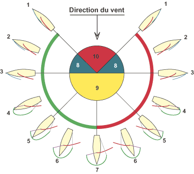
Vous n'entendrez jamais un marin digne de ce nom lancer "Tire sur la corde ! Ce serait une injure et un témoignage patent de l'incompétence du sieur".
D'abord, on ne 'tire' pas mais on borde (c'est quand même plus élégant). Ensuite il n'y a pas de corde sur un bateau. Des écoutes, des 'bouts', des drisses, oui mais de corde point.
Donc 'tire sur la corde' devient 'borde l'écoute' et 'lache ça toute suite' devient 'choque, choque bon sang !'.
Puisqu'on a évoqué les termes choquer et border, on notera qu'un marin digne de ce nom n'est pas binaire. Il peut donc nuancer ses propos.
Ainsi, border 'un peu' se dit 'raidir'. De même, choquer 'un chouia' se dit 'mollir'
Prendre un ris signifie: diminuer la voilure. Lacher un ris, c'est l'inverse.
La grand'voile dispose de points d'écoute et d'amure répartis sur sa hauteur (en général, il y a trois séries de 2 points, correspondant chacun à un ris). Lorsque le vent forcit, il est possible de faire varier la voilure en hissant ou affalant partiellement la voile et en utilisant ces différents points pour la maintenir correctement.
Sur l'illustration, on voit derrière une grand'voile avec 2 ris et un tourmentin devant. Le bateau est prêt pour affronter la brise (bon vent).
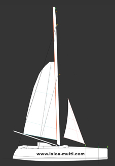
C'est un appareil qui permet de transformer de l'eau de mer en eau douce. Abracadabra.
Sans entrer dans les détails (que d'ailleurs, je ne connais pas), l'eau douce est produite par osmose à travers une membrane.
Contrairement aux voitures, les bateaux ne s'arrêtent pas nécessairement quand l'équipage est fatigué. Eh oui, s'il est aisé (et encore) de trouver un mouillage pour la nuit en navigation côtière, lorsque l'on navigue en haute mer, il est impossible de mouiller.
On est donc contraint de diriger le navire jour et nuit, jusqu'à ce que l'on arrive à bon port (ou bonne plage). Donc, pendant la nuit, l'équipage effectue des quarts (c'est-à-dire que chacun des membres de l'équipage assure la veille du bateau pendant que les autres dorment) de manière à ce qu'il y ait toujours quelqu'un à la barre du bateau.
Evidemment, quand on est 2, pendant que l'un veille, l'autre dort, et Inversement, ce qui double la durée totale des nuits (si l'on considère que la nuit est la période pendant laquelle au moins l'un des 2 dort).
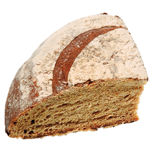
Qu'ils soient nommés Ouragan, Cyclone ou Typhon, ces phénomènes météorologiques sont parmi les plus violents et les plus dévastateurs que connaît notre planète.
Pour les navigateurs, éviter les cyclones est évidemment une question de sécurité fondamentale et, même amarré à quai ou au sec, le bateau peut subir des dommages irréversibles.
Fort heureusement, il n'y a que 7 zones géographiques sur la terre où ces phénomènes peuvent se rencontrer et la probabilité qu'ils surviennent augmente considérablement en certaines périodes de l'année (quand il fait chaud). Un des enjeux du voyage autour du monde consiste donc à ne pas être en zone cyclonique au mauvais moment.
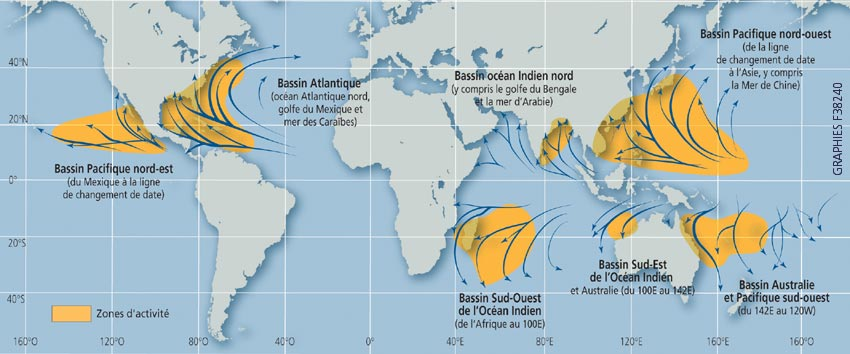